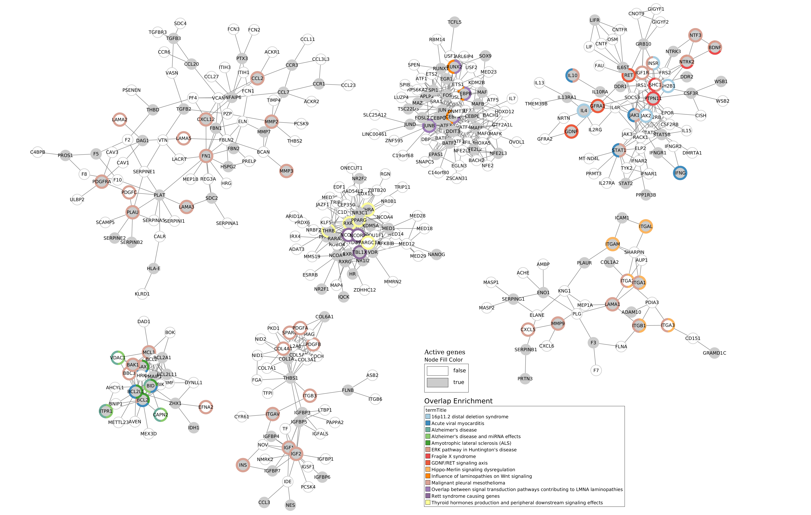

Example 2 : analysis from files¶
Tip
This example is a good way to reproduce analysis. The user can choose version of data.
Warning
Results of DOMINO can’t be reproduced from server analysis.
Study the link between vitamin A and rare diseases CTD and WikiPathways request results from files User gives three main files : CTD file (for the target genes) and two WikiPathways files (for the background and rare disease pathways)
Overlap analysis¶
CTD was already request to extract target genes of vitamin A and its descendant molecules. The file is given to the
--CTD_file parameter. Only the interaction with at least two publications are kept (--nbPub 2).
WikiPathways was already request too. The background pathways is given using --backgroundFile and the rare disease
pathways are given to --GMT
Results files are saved into examples/OutputResults_example2/ folder.
python3 main.py overlap --CTD_file examples/InputData/CTD_request_D014801_2022_08_11.tsv \
--GMT examples/InputData/WP_RareDiseases_request_2022_08_11.gmt \
--backgroundFile examples/InputData/backgroundsFiles.tsv \
--nbPub 2 \
--outputPath examples/OutputResults_example2/
Several files are generated :
CTD_requestFiltered_D014801.tsv: this file contains the filtered interactionsOverlap_D014801_withpathOfInterest.csv: results of the overlap analysis between targeted genes and rare diseases pathways
If you want to have more details about theses files go to : BLABLABLA
Input files : result come from request on the 11th of August 2022
10 molecules (vitamin A + 9 descendants)
7 766 genes linked
102 rare diseases pathways (between 2 and 436 genes)
1 261 human pathways (between 1 and 484 genes)
Results :
Filtered results :
7 molecules (vitamin A + 6 others)
2 143 genes linked
target genes overlap significantly 27 RD pathways
1726 genes are found (and used) in the WikiPathways background
Top 5 :
awk -F’;’ ‘{if($9<=0.05){$9=sprintf(“%0.3e”, $9); print $1”;”$2”;”$9”;”$6}}’ Overlap_D014801_withpathOfInterest.csv > example2_overlap_top5.csv
PathwayIDs |
PathwayNames |
pAdjusted |
IntersectionSize |
|---|---|---|---|
WP5087 |
Malignant pleural mesothelioma |
3.663e-24 |
146 |
WP4298 |
Acute viral myocarditis |
9.183e-16 |
45 |
WP2447 |
Amyotrophic lateral sclerosis (ALS) |
1.020e-11 |
25 |
WP5053 |
Development of ureteric collection system |
2.557e-08 |
28 |
WP4879 |
Overlap between signal transduction pathways … |
7.638e-07 |
25 |
On a previous analysis (Ozisik et al., 2022), an overlap analysis was made between genes targeted by vitamin A and CAKUT pathways. Three of the four pathways related to CAKUT overlaping target genes are found in this analysis :
awk -F’;’ ‘NR==1{print $1”;”$2”;”$9”;”$6} {if($9<=0.05){$9=sprintf(“%0.3e”, $9); print $1”;”$2”;”$9”;”$6}}’ Overlap_D014801_withpathOfInterest.csv | grep “WP5053|WP4823|WP5052|WP4830”
PathwayIDs |
PathwayNames |
pAdjusted |
IntersectionSize |
|---|---|---|---|
WP5053 |
Development of ureteric collection system |
2.557e-08 |
28 |
WP4830 |
GDNF/RET signaling axis |
1.95e-05 |
13 |
WP4823 |
Genes controlling nephrogenesis |
8.55e-05 |
18 |
Active Module Identification : DOMINO¶
Data sources are given to --CTD_file, --GMT and --backgroundFile parameters. We still want to extract interactions
with at least 2 papers (--nbPub 2).
With this method, we will search active modules (extend our target list to other link genes) using a protein-protein
interaction network (PPI_network_2016.sif). Then, for each active module identified, an overlap analysis will made
against the rare disease pathways from WikiPathways.
Results files are saved into examples/OutputResults_example2/ folder.
python3 main.py domino --CTD_file examples/InputData/CTD_request_D014801_2022_08_11.tsv \
--nbPub 2 \
--GMT examples/InputData/WP_RareDiseases_request_2022_08_11.gmt \
--backgroundFile examples/InputData/backgroundsFiles.tsv \
--networkFile examples/InputData/PPI_network_2016.sif \
--outputPath examples/OutputResults_example2/
Several files are generated :
CTD_requestFiltered_D014801.tsv: this file contains the filtered interactionsDOMINO_inputGeneList_D014801.txt: list of genes used for the AM identificationOverlap_AM_*_D014801_withpathOfInterest.csv: results of the overlap analysis between targeted genes and rare diseases pathways. One file for each AM.DOMINO_D014801_activeModulesNetwork.txt,DOMINO_D014801_overlapAMresults4Cytoscape.txt,DOMINO_D014801_activeModules.txt,DOMINO_D014801_activeModulesNetworkMetrics.txtandDOMINO_D014801_signOverlap.txt: some metrics are calculated and saved into files. Theses files are useful for visualisation.
If you want to have more details about theses files go to : BLABLABLA
Results :
Filtered request :
7 molecules (vitamin A + 6 others)
2 143 genes linked
2 143 genes inside the DOMINO input genes list
13 Active modules (between 93 and 17 nodes)
(see DOMINO_D014801_activeModulesNetworkMetrics.txt file)
5 Active modules overlap significantly genes list
awk -F”t” ‘BEGIN{print “termID;termTitle;padj”} NR==FNR{a[$1]=$2; next} {$2=sprintf(“%.3e”, $2);print $1”;”a[$1]”;”$2}’ ../../InputData/WP_RareDiseases_request_2022_08_11.gmt DOMINO_D014801_signOverlap.txt > example2_DOMINOOverlap.csv
termID |
termTitle |
padj |
|---|---|---|
WP4541 |
Hippo-Merlin signaling dysregulation |
2.412e-07 |
WP5087 |
Malignant pleural mesothelioma |
2.373e-06 |
WP2447 |
Amyotrophic lateral sclerosis (ALS) |
9.302e-05 |
WP4298 |
Acute viral myocarditis |
1.197e-03 |
WP4950 |
16p11.2 distal deletion syndrome |
2.277e-03 |
WP4830 |
GDNF/RET signaling axis |
1.055e-02 |
WP4879 |
Overlap between signal transduction pathways … |
1.098e-02 |
WP4844 |
Influence of laminopathies on Wnt signaling |
2.800e-02 |
WP2059 |
Alzheimer’s disease and miRNA effects |
4.257e-02 |
WP5124 |
Alzheimer’s disease |
4.257e-02 |
WP4549 |
Fragile X syndrome |
4.361e-02 |
WP3853 |
ERK pathway in Huntington’s disease |
4.361e-02 |
Visualisation :
Non active genes can overlap pathways with the active genes.
To know how the network was made, go to : BLABLA
Some statistics of each active modules founded : cf. le fichier
AMINumber |
EdgesNumber |
NodesNumber |
ActiveGenesNumber |
|---|---|---|---|
1 |
357 |
93 |
35 |
2 |
103 |
76 |
29 |
3 |
246 |
69 |
27 |
4 |
135 |
66 |
26 |
5 |
120 |
48 |
20 |
6 |
60 |
43 |
18 |
7 |
44 |
32 |
15 |
8 |
59 |
34 |
14 |
9 |
73 |
28 |
12 |
10 |
57 |
45 |
16 |
11 |
45 |
37 |
13 |
12 |
20 |
17 |
8 |
13 |
28 |
22 |
9 |
Random Walk with Restart : multiXrank¶
First, we built a rare diseases network and the corresponding bipartite. If you want more detailed, go to :
python3 main.py networkCreation --networksPath examples/InputData/multiplex/2/ \
--networksName WP_RareDiseasesNetwork_fromFile.sif \
--bipartitePath examples/InputData/bipartite/ \
--bipartiteName Bipartite_WP_RareDiseases_geneSymbols_fromFile.tsv \
--GMT examples/InputData/WP_RareDiseases_request_2022_08_11.gmt \
--outputPath examples/OutputResults_example2/
Then, we run the random walk with restart analysis. As before, the date source come from files and interactions are filtered
by the number of associated papers (--CTD_file and --nbPub 2).
MultiXrank needs a configuration file (--configPath) and the networks path (--networksPath). We run with
default parameters.
The target genes are set as seeds for the walk and saved into a file --seedsFile examples/InputData/seeds.txt.
The user has to give the SIF name (--sifFileName) to save the network results and the top number of results too
(--top 10).
Results files are saved into examples/OutputResults_example2/ folder.
For more detail about the structure of the config file etc go to :
python3 main.py multixrank --CTD_file examples/InputData/CTD_request_D014801_2022_08_11.tsv \
--nbPub 2 \
--configPath examples/InputData/config_minimal_example2.yml \
--networksPath examples/InputData/ \
--seedsFile examples/InputData/seeds.txt \
--sifFileName example2_resultsNetwork.sif \
--top 10 \
--outputPath examples/OutputResults_example2/
Several files are generated :
CTD_requestFiltered_D014801.tsv: this file contains the filtered interactionsRWR_D014801/folder with the walk results :config_minimal_example1.ymlandseeds.txt: a copy of the input filesmultiplex_1.tsvandmultiplex_2.tsv: score for each feature. 1 corresponds to the multiplex and 2 to the disease network (depends of the folder name where networks are saved).example2_resultsNetwork.sif: SIF file with the network result
For more detail about the results, go to :
Results :
Filtered request :
7 molecules (vitamin A + 6 others)
2 143 genes linked
We used the default parameters. 1 988/2 143 genes are in the networks and used for the walk.
Gene with the highest score : VCAM1 with score = 0.00020841510533737325 (a seed)
27 diseases have a score higher
node |
pathway name |
score |
|---|---|---|
WP5087 |
Malignant pleural mesothelioma |
0.002878 |
WP4673 |
Male infertility |
0.000872 |
WP2059 |
Alzheimer’s disease and miRNA effects |
0.000783 |
WP5124 |
Alzheimer’s disease |
0.000783 |
WP4298 |
Acute viral myocarditis |
0.000733 |
WP4746 |
Thyroid hormones production and peripheral downstream … |
0.000629 |
WP3584 |
MECP2 and associated Rett syndrome |
0.000606 |
WP5224 |
2q37 copy number variation syndrome |
0.000569 |
WP4549 |
Fragile X syndrome |
0.000555 |
WP4657 |
22q11.2 copy number variation syndrome |
0.000529 |
WP4541 |
Hippo-Merlin signaling dysregulation |
0.000521 |
WP4932 |
7q11.23 copy number variation syndrome |
0.000495 |
WP5053 |
Development of ureteric collection system |
0.000454 |
WP4949 |
16p11.2 proximal deletion syndrome |
0.000446 |
WP4312 |
Rett syndrome causing genes |
0.000395 |
WP5114 |
Nucleotide excision repair in xeroderma pigmentosum |
0.000394 |
WP2447 |
Amyotrophic lateral sclerosis (ALS) |
0.000385 |
WP4879 |
Overlap between signal transduction pathways contributing … |
0.000334 |
WP4803 |
Ciliopathies |
0.000311 |
WP4540 |
Hippo signaling regulation pathways |
0.000309 |
WP4906 |
3q29 copy number variation syndrome |
0.000308 |
WP5222 |
2q13 copy number variation syndrome |
0.000285 |
WP3995 |
Prion disease pathway |
0.000281 |
WP3998 |
Prader-Willi and Angelman syndrome |
0.000244 |
WP2371 |
Parkinson’s disease pathway |
0.000231 |
WP4823 |
Genes controlling nephrogenesis |
0.000221 |
WP4545 |
Oxysterols derived from cholesterol |
0.000217 |
awk -F”t” ‘NR==FNR{a[$1]; next} {if($2 in a){print $2”tTrue”}else{print $2”tFalse”}}’ seeds.txt multiplex_1.tsv > seeds.4Cytoscape

Pathway rare diseases identified¶
Using orsum to compare
orsum.py --gmt WP_RareDiseases_request_2022_08_11.gmt
--files Overlap_D014801_withRDWP.4Orsum DOMINO_D014801_signOverlap.4Orsum diseasesResults.4Orsum
--fileAliases Overlap DOMINO multiXrank
--outputFolder orsum/